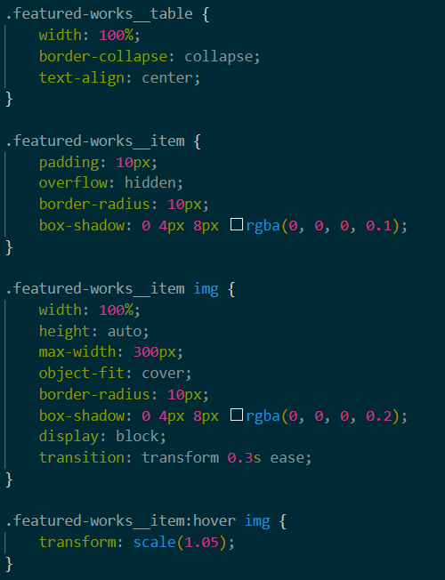
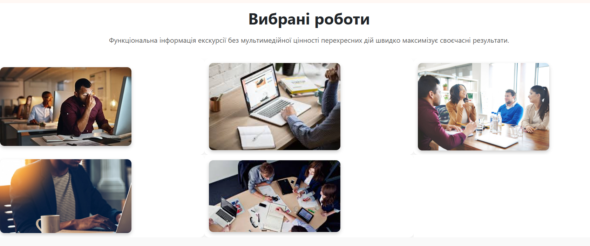

Тема, мета, місце розташування WEB-застосунка та місце звітного HTML-документу
Тема: КАСКАДНІ ТАБЛИЦІ СТИЛІВ. СЕЛЕКТОРИ .ІДЕНТИФІКАТОРИ. СТИЛЬОВЕ ОФОРМЛЕННЯ ТЕКСТОВИХ ЕЛЕМЕНТІВ В HTML-ДОКУМЕНТАХ.
Мета: Придбати практичні навички роботи з селекторами, ідентифікаторами, списками, різноманітними властивостями кольору і фону, зовнішними та внутрішними відступами, плаваючими елементами, оформленням текстових елементів
СПОСОБИ ПІДКЛЮЧЕННЯ СТИЛІВ
Існує три основні способи підключення CSS до HTML:
- Вбудований стиль (inline CSS) – додається
безпосередньо в атрибут style елемента.
<p style="color: red;">Цей текст червоний</p>Цей текст зелений
- Внутрішній стиль (internal CSS) –
прописується у <style> всередині <head>
<style>
p { color: blue; }
</style> - Зовнішній стиль (external CSS) –
підключається через окремий файл .css за допомогою
<link rel="stylesheet" href="styles.css">
СЕЛЕКТОРИ CSS
Селектор – визначає до якого HTML-елемента буде застосований стиль CSS. Селекторами можуть бути HTML-елементи, їх класи та ідентифікатори, а також псевдокласи та псевдоелементи.
СЕЛЕКТОР ТЕГУ
Селектори тегу (Type Selector) – застосовують стилі до всіх елементів певного типу.
p { color: green; }
СЕЛЕКТОР КЛАСУ
Селектори класу (Class Selector) – використовують . перед назвою класу для вибору всіх елементів із цим класом.
.highlight { background-color: yellow; }
<p class="highlight">Цей текст має жовте тло.</p>
Цей текст має блакитне тло.
СЕЛЕКТОР ІДЕНТИФІКАТОРА
Селектори ідентифікаторів (ID Selector) – використовують # перед ідентифікатором, застосовується до одного унікального елемента.
#header1 { font-size: 24px; }
<h1 id="header1">Заголовок</h1>
Заголовок
ШРИФТИ
Код:
Зображення:
ТЕКСТ
Код:
Зображення:
ТАБЛИЦЯ
Код:
Зображення:
ФОН
Код:
Зображення:
СПИСКИ
Код:
Зображення: